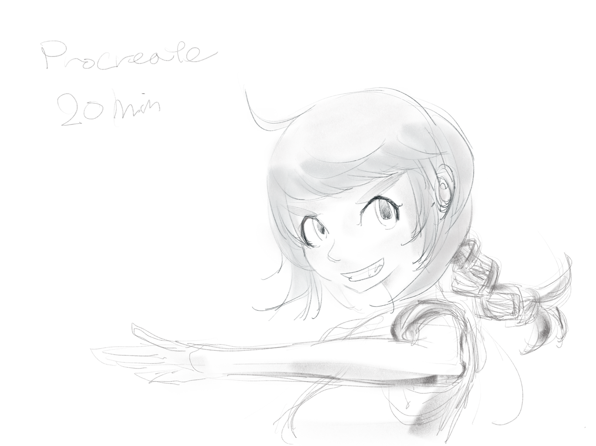

iPad Pro向けのお絵描きツールいろいろ見てみた
概要
iPad Pro買ったのでお絵描きしてる。
広い。
軽い(ペンタブ持ち歩くより激しくマシ)。
ペンの追従性のMaxが異様に良い(Surface Proでは叶わなかった)。
楽しい。
試したAppと描いてみた絵一覧
これ以外にもこういうのもあるんで試せ、っていうのがあったら、Twitterアカウントまで連絡くれれば良いと思う。より良いツールと出会えると嬉しい。
Procreate
https://itunes.apple.com/en/app/procreate-sketch-paint-create./id425073498

新、マイベストお絵描きツール。
レイヤーもあるしペンの操作も素晴らしく効くし、落ちないしデータ勝手に消えないし。
回転とかが非常にスムーズで素敵すぎる。
Paper
https://itunes.apple.com/us/app/paper-notes-photo-annotation/id506003812
旧、自分にとっての最高のツール。
絵を描く際は、ハサミでの部分消し、移動と鉛筆だけ使ってる。
レイヤーと回転が欲しいけど、サクサク描く分には困らない印象。見てくださいこの完璧な鉛筆傾け+筆圧の入りと抜け。
Adobe Sketch
https://itunes.apple.com/us/app/adobe-photoshop-sketch-expressive/id839085644
これの鉛筆ツールが凄い。移動速度、筆圧から濃淡への反映速度、ともにパーフェクト。
弱点が何個かあって、
ひとつは、レイヤーがないこと。
次に、UIの構造が頭おかしいこと。
そしてUndoを勝手にまとめやがること。
あと、よく落ちること。
最後に、落ちた際のデータが全部消えたことがあること。
ああ、、残念、、、さすがAdobe、、、絶対に金払って得るような信頼性じゃねえ、、、無償でよかった、、
でも鉛筆ツールは気持ち良い。
Paperの次点になったのは落ちる頻度がスッゲー高いから + Paperのハサミに比べて消しゴムを使うのが辛いから。

Sketches
https://itunes.apple.com/us/app/tayasui-sketches-draw-paint/id641900855
かなり具合が良い。筆圧にも対応している。ただしTilt(傾き)がないっぽいのと、ドキュメントの吐き出しとか複数ドキュメントの扱いとかがさっっぱりわからなかった。
理解できればすごく良いツールなのでは、、！！！
いろんなツールを課金で扱ってるので、もっと時間かけても良いかもしれない。レイヤーもある。
1時間お試しで機能を使えるのがすごく良い。
ツール数がすごく多いんで、、、総額幾らになるんだろうな？
シャーペンでカリカリ書いてたんだけど、濃淡の設定がよくわかんなかったので淡ーく書いてからサインペンっぽいのでサクサクした。

Pixelmator
https://itunes.apple.com/en/app/pixelmator/id924695435
Mac版も存在するお絵描きApp。レイヤーが自由に使えたりするし操作性も良い。クセは強いけど。
で、、、、まだペンに対応してない。筆圧とかは反映されてない感じだった。
その辺対応したらすごく良いと思う。ただやっぱり異様にクセが強い。
操作系のショートカットとかがしっかりしてればいいんだけどな、、、

Autodesk SketchBook
https://itunes.apple.com/us/app/autodesk-sketchbook/id883738213
Pro Toolsってのが別売りだったのでそれも入れつつ。
っていうか入れないとレイヤー使えなかったんで。
で、、、そもそもタッチとかペンの入力が怪しい。チョンっと書いた点とかがすごく遅れて小さく出る。
ドキュメントのサイズが1000pixちょっとになってて、ようはRetina対応されてない感じ。
こいつだけ、この記事書いてる時に画像サイズを変更してない。1280 x 959とかだった。
Undoのショートカット誤爆しまくるし、筆圧は入ってる、、、ような気がするんだけどピーキーすぎて、書いてて気持ち良さがない。
今後に期待。
→ドキュメントサイズとかはちゃんと設定するところがあった。が、サイズ限界が小さくて操作しづらくて挫折した。

とりあえず以上。
唐突だがすべてのお絵描きAppに望むこと for iPad
UndoとRedoのショートカットをうまいこと考えてくれ、、、
Paperのやつが操作法変わって使いづらくなったとはいえすごく良い。
次点でSketchesのやつがまた良い。
最悪なのは、Undoボタンを押さないとUndoできない(ないしはそうせざるを得ないくらいショートカットの反応が悪い
褒めてないやつのUndo操作は地獄のようだった。
消しゴムとタッチインターフェース
Paperのハサミツールが結構最高で、これについてちょっと書いておく。
Paperでは範囲選択(Lasso)で、選択した範囲を任意の場所に移動することが可能になっている。
正直これってものすごく使いやすくて、汚くなった箇所とかを選択、ポイ捨て、っていうのがすごく高速に、かつ範囲指定を細かく実現できる。
マスキングとカットを同時にできる感じ。
消しゴムだとこうはいかない。
消すっていうのをストロークでやると、けっこう面倒臭いな、っていうのが、iPad Pro + ペンで描画周りが素晴らしくなってからの感想。